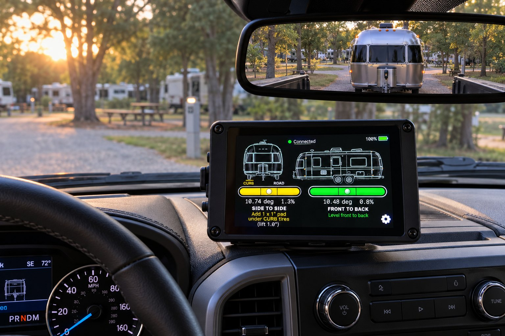
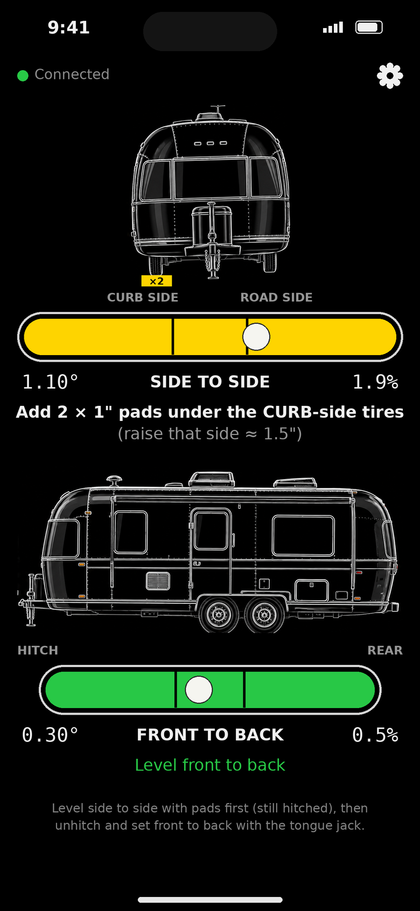
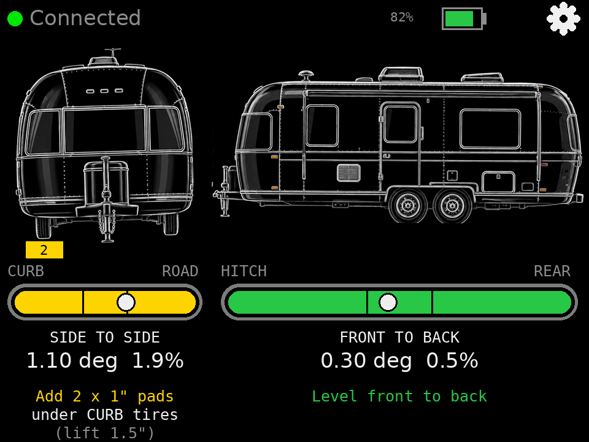
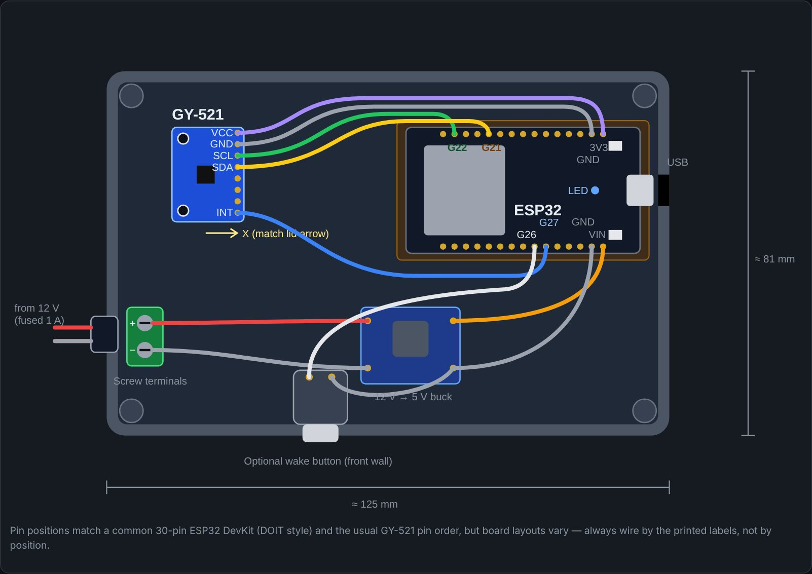

Vehicle Core · LevelUp
Level your trailer on the first try
LevelUp shows how level your trailer is, live, on a screen in the tow vehicle while you back into the site. It tells you how many leveling pads to put under which tires and how far to move the tongue jack, so you stop guessing, climbing out to check a bubble level, and pulling forward to try again.
Working prototype
The Problem
Leveling a trailer is a guessing game
A trailer that sits a degree or two off level is more than an annoyance: doors swing on their own, showers and sinks drain slowly, you sleep on a slope, and absorption refrigerators need to be close to level to cool properly. The usual routine looks like this:
- Back into the site and stop.
- Climb out and set a bubble level on the floor or the tongue.
- Guess how many blocks the low side needs.
- Pull forward, stack blocks, back up onto them.
- Climb out and check again. Repeat.
How LevelUp Solves It
The answer is on the screen before you get out
Live level from the driver's seat
Side-to-side and front-to-back level update ten times a second while you back in, on bubble levels you can read at a glance.
Exactly how many pads, and where
LevelUp converts the tilt into inches using your trailer's wheel track width and says how many 1" pads go under the curb-side or road-side tires.
Tongue jack guidance
After you unhitch, it tells you whether to raise or lower the tongue jack and by how much, measured at the coupler.
Green means done
Each level turns green within half a degree of level, so there is no squinting at a bubble to decide whether it's close enough.
Nothing to switch on
The sensor runs from the trailer's 12 V system, sleeps when the trailer is parked and wakes itself the moment the trailer starts moving.
Calibrate once
Park on known-level ground and tap "Set level here." The sensor stores it, so every display uses the same calibration.
Two Ways to See It
On your phone or on a dedicated display
The sensor talks to both at the same time, so one person can watch the handheld on the dash while another walks around with a phone.

iPhone app
A SwiftUI app with the same views, settings and calibration. Working prototype; not yet on the App Store.

Handheld display
A 3.2" ESP32 touchscreen in a 3D-printed case with its own rechargeable battery and USB-C charging. No phone, app store or account required.
How It Works
One small sensor, any number of screens
Sensor in the trailer
An ESP32 and a 3-axis accelerometer bolted flat to the floor, powered from the house battery. It measures which way gravity pulls, the most stable reference for a parked trailer.
Bluetooth, 10 times a second
The sensor streams calibrated tilt over Bluetooth Low Energy. Up to three screens can connect at once.
Advice on the screen
Each display turns tilt into pads and jack inches using your trailer's measurements, then shows what to do next.

Current Status
Where LevelUp stands today
- Sensor firmware with wake-on-motion
- Handheld display
- iPhone app (prototype)
- Phone and handheld connected together
- Sensor enclosure on the trailer's 12 V system
- 3D-printed handheld case
- Bluetooth range test from inside the aluminum body to the cab
- Tap-to-wake on the handheld
- A larger "command center" display with tank and battery levels
Interested in LevelUp?
LevelUp is being field-tested on a 1985 Airstream Safari. If you'd like to follow along or try one, get in touch.